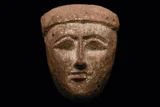
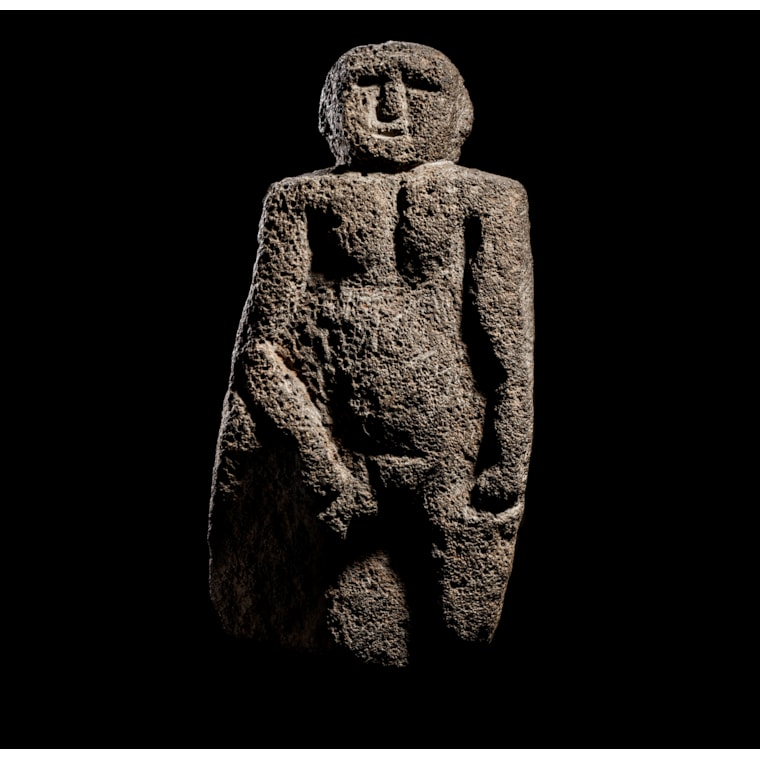
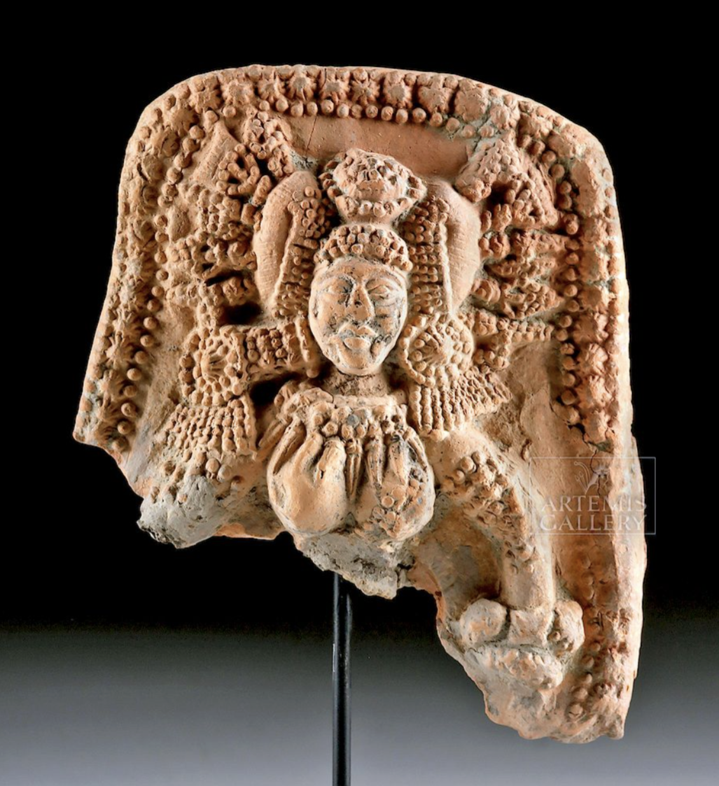
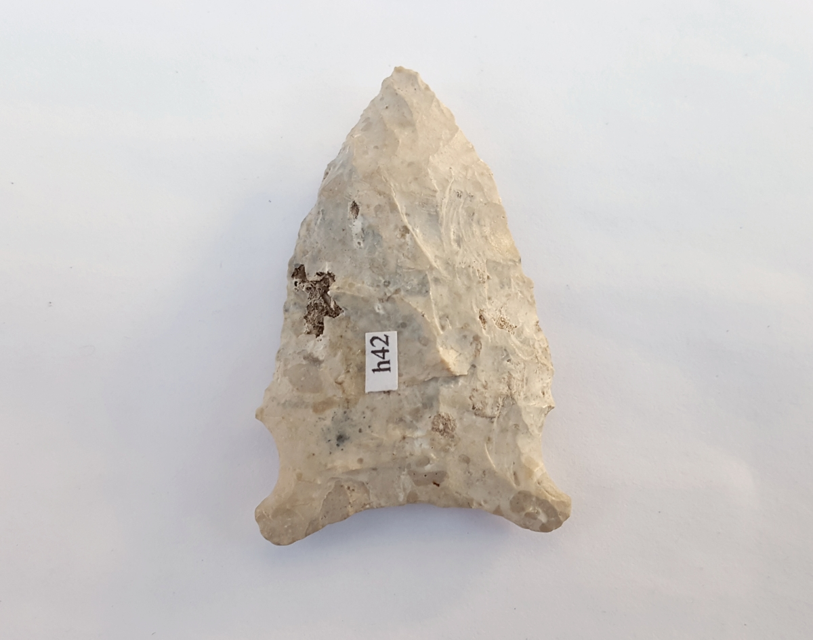

Museum Souvenir Shop
Take home a piece of history with our collection-inspired replicas and souvenirs.

Egyptian Mummy Mask - Late Period
From the Anthropology section, a mask from the late period of 700 BC -30 BC, found in the Vally of Kings. The mask was used to provide protect the head or face of the deceased, it was also said a mask of protection from evil sprits as well.
$1,699.00

Neolithic Figure
From the Archeology section, a figure from the Neolithic, 10000 - 4500 B.C, found in the eastern mediterranean. It is carved from a thick slab of volcanic stone, it's found to be a symbol of ancestral repersentation or household protection.
$2,200

Rare Chandraketugarh Pottery Plaque of Goddess - Yakshi
From the Anthropology section, found in Eastern India, created around 2nd century BCE to 1st century CE, is a moulded terracotta plaque of a Goddess known as Yakshi. Yakshi was known as a nature sprit, she is associated with representing fertility, prosperity, and nature.
$1,400

Native American Arrowhead
From the Anthropology section, a Native American arrowhead carved out of fossial chert, from the early Archaic, 10,5000 – 7000 yrs BP, found in what is now the Gulf Coastal region. These types of arrow heads were seemed to be used as a spear thrower, to be able to aim at a further at greater accuracy.
$350